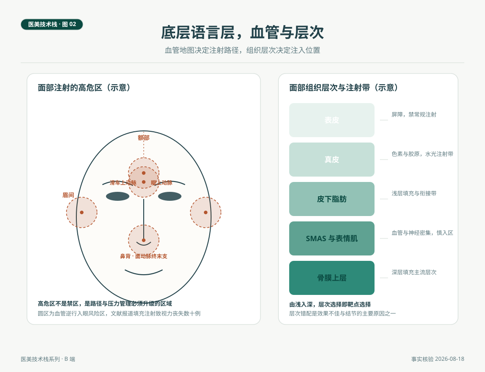

医生的底层语言是解剖
面部注射的所有风险地图和光电治疗的所有参数依据，最终都落在同一门语言上，解剖。血管地图决定注射路径，组织层次决定注入位置，靶基结构决定能量参数。填充注射致视力丧失在文献里已报道数十例，这个数字背后不是解剖知识的缺乏，是解剖从未被当作语言层来教。这一篇把这门语言的两条主线讲清。
场景与问题
2026 年春，一位从业八年的注射医生参加了一次解剖培训。导师在标本上指出滑车上动脉在眉间区域的走行，以及它与眼动脉系统的连接。这位医生后来说，过去八年自己靠的是手感，进针的深浅、推注的力度，都是案例喂出来的。手感没有错，但手感是语法，解剖才是语言，语法熟练而语言不清的写作，偶发的事故只是时间问题。
解剖培训工作坊如今是注射进阶教育的通行形式，这本身就是行业的一张答卷。语言层太重要，重要到不能只在下临床时顺带学。这一篇讲这门语言的两条主线，血管与层次，再看它如何延伸到光电参数，最后谈变异与持续学习。
一、血管地图与高危区
面部血管与眼动脉系统之间存在吻合，这是理解注射风险的起点。滑车上动脉与眶上动脉由眼动脉发出，眉间与额部注射的材料一旦进入这些血管，在足够高的压力下可以逆行进入眼动脉系统，栓塞视网膜中央动脉，造成缺血性视力丧失。《面部注射填充剂致视力丧失的研究进展》（中华医学期刊网收录综述）统计，文献已报道此类病例数十例，鼻部与额部是最高危的区域。《透明质酸面部填充不良反应的预防与治疗专家共识》同样指出，栓塞不仅发生于面部浅层血管，还可累及眼动脉及其分支甚至颅内动脉，导致组织坏死、失明甚至危及生命。
把这条医学事实翻译成操作语言，高危区不是禁区，是需要升级路径与压力管理的区域。行业通行的做法包括钝针使用、注射前回抽、低压力少量推注、控制单点剂量，这些不是技巧炫耀，是针对逆行栓塞机制的工程对策。一旦出现视力症状，处置是时间敏感的，《介入血管再通术治疗额面部注射透明质酸美容致眼动脉栓塞视力受损专家共识》（介入放射学杂志，2021）给出了动脉内介入再通与透明质酸酶使用的路径，机构层面的意义在于，识别、急救、转诊的链条必须在事前成文，这属于栈的规范安全层，第 04 篇会接上。

二、层次结构，位置的语法
面部软组织由浅入深分为表皮、真皮、皮下脂肪、SMAS 与表情肌、骨膜上层几个基本层次。每一层有自己的物理特性与容量逻辑。水光注射的目标带在真皮浅层，浅层填充与轮廓衔接在皮下脂肪层，深层支撑的主流层次在骨膜上层。SMAS 与表情肌层血管神经密集，是路径上需要谨慎经过的区域。
层次错配是注射效果不佳与结节形成的常见原因之一。透明质酸打在过浅的层次会出现透光与隆起，打在错误的深浅位置会出现轮廓失真。材料特性与层次是一对变量，黏弹性高的材料适合深层支撑，颗粒细腻的材料适合浅层修饰，第 03 篇展开材料侧，这里只立起一条原则，层次选择即靶点选择，位置错了，剂量与手法都无法补救。
层次语言同样解释恢复期。眼周皮肤薄，口周与颊部相对厚，同样的能量参数在不同区域的效果与反应不同。这直接通向下一节。
三、解剖延伸到光电
光电治疗的参数不是从说明书上抄来的，是从靶基的解剖生理推出来的。色素类治疗靶基是黑素小体，血管类是血红蛋白，剥脱与非剥脱点阵的共同靶基是水，三种靶基对光的吸收各有峰值，波长选择的依据在这里。Fitzpatrick 皮肤分型是对黑素细胞密度与反应性的个体化描述，东亚人群多在三至五型，这个数字直接进入参数排序的考量，亚洲人群激光磨削后炎症后色素沉着患病率为 11.1% 至 17.1%（文献数据），黄褐斑人群更要先评估后决策，这与黄褐斑系列的既有梳理一致。
一句话概括，光电的参数思维，底层是靶基解剖。不懂靶基的参数是抄来的参数，懂靶基的参数才是算出来的参数。
四、变异与持续学习
教科书上的血管走行是多数人的地图，个体变异是常态而非例外。血管的直径、走行、吻合方式存在显著个体差异，这解释了两件事。其一，任何示意图谱都不能替代个案的评估与操作判断。其二，解剖学习不是一次性课程，是持续版本更新，尸体解剖工作坊、超声引导下的层次识别、新的影像技术，都在给这门语言打补丁。
自检清单
| 主线 | 核对问题 |
|---|---|
| 血管地图 | 眉间、鼻背、额部、颞部的危险区血管名称与走行能否徒手画出 |
| 机制 | 逆行栓塞的机制与条件能否向客人用三句话讲清 |
| 路径对策 | 钝针、回抽、低压力推注在自己的操作里是否成习惯 |
| 急救链 | 出现视力症状后的识别、急救、转诊流程本机构是否成文 |
| 层次 | 水光、浅层填充、深层支撑各自的目标层次能否即时回答 |
| 靶基 | 每台在用设备的靶基与吸收峰是否清楚 |
| 分型 | 每位客人的皮肤分型是否记录并进入参数考量 |
结论与失效条件
解剖是医生技术栈的底层语言，血管地图决定注射路径，层次结构决定注入位置，靶基生理决定光电参数。这门语言的价值不在于应对考试，在于让手感有依据、让参数有出处、让预案有对象。
失效条件如下。其一，本文所有图示与描述只作结构说明，个体变异决定了它们不能用于个案操作定位，个案判断由执业医师作出。其二，并发症数据引用的是文献报道口径，个案概率无法从群体数据推算，沟通时应使用概率语言而非绝对表述。其三，通行做法（钝针、回抽、低压力）描述的是行业共识性对策，具体操作规范以现行专家共识与医疗机构制度为准。
语言层之上是两层核心，设备与材料。框架怎么选、参数怎么定、材料怎么写、层次怎么配，这是第 03 篇的内容。
附 事实与来源清单
血管与并发症。 填充注射致视力丧失文献报道数十例（《面部注射填充剂致视力丧失的研究进展》，中华医学期刊网收录综述）。栓塞可累及眼动脉及其分支甚至颅内动脉（《透明质酸面部填充不良反应的预防与治疗专家共识》）。眼动脉栓塞介入再通路径（《介入血管再通术治疗额面部注射透明质酸美容致眼动脉栓塞视力受损专家共识》，介入放射学杂志，2021）。
色沉数据。 亚洲人群激光磨削后炎症后色素沉着患病率 11.1% 至 17.1%（人民日报健康客户端引述文献，沿用行业观察第 01 篇核验口径）。
方法说明。 高危区与层次图示为结构示意，不指向任何真实个案。本文不构成医疗建议，具体诊疗由执业医师按个案决定。